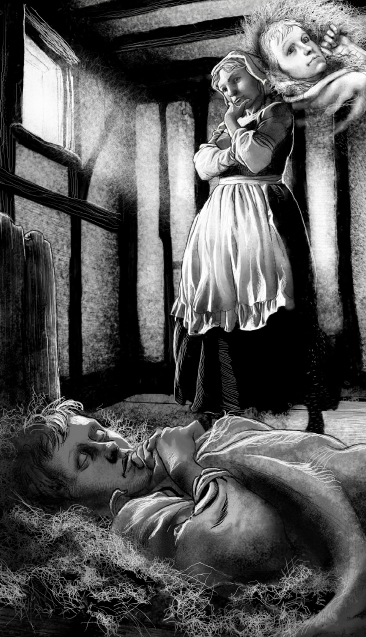

Listen to Part 1:
Giết người!
John Canty đưa hoàng tử đến tòa Offal. Hoàng tử la hét và cố chạy trốn. Rất nhiều người cười nhạo họ nhưng Cha Andrew bảo John Canty dừng lại. John Canty dùng một cây gậy đánh vào đầu Cha Andrew. Sau đó, ông kéo hoàng tử vào căn phòng của nhà Canty.
‘Tôi đang ở đâu thế này?’ hoàng tử hỏi.
‘Nhà mình chứ còn ở đâu nữa,’ Nan và Bet đáp.
‘Nhà mình ư? Đây không phải nhà tôi,’ cậu kêu lên. ‘Tôi sống trong cung điện cơ mà.’
Hai chị em và bà Canty rất lo lắng, họ chạy đến chỗ cậu. ‘Con đang nói gì vậy?’ bà Canty hỏi. ‘Tom, con có sao không?’
‘Tôi không phải Tom,’ hoàng tử nói. ‘Tôi là Edward, Hoàng tử xứ Wales!’
‘Hoàng tử xứ Wales ư? Ha! Con trai tôi nghĩ mình là Hoàng tử xứ Wales!’ John Canty la lên. ‘Nó điên rồi!’
‘Con trai tội nghiệp của tôi! Con đọc quá nhiều về hoàng tử mất rồi,’ bà Canty nói. ‘Con không phải hoàng tử đâu. Tôi là mẹ con mà.’
Listen to Part 2:
‘Tôi không biết bà!’ Edward tức giận nói.
Bà Canty nghĩ con trai mình bị điên và bà bắt đầu khóc.
‘Hôm nay con kiếm được bao nhiêu tiền vậy, Tom?’ John Canty hỏi.
‘Con không có tiền cho bố đâu. Con không ăn xin. Con là hoàng tử!’ Edward đáp.
Điều này khiến John Canty rất tức giận và ông đánh hoàng tử nhiều lần. Sau đó, Bà nội Canty đánh ông ta. Bà Canty cố ngăn họ lại nhưng không được.
John Canty tắt đèn và đi ngủ. Nan và Bet đến chỗ hoàng tử. Họ lấy rơm đắp cho cậu để cậu ấm áp. Sau đó, bà Canty đến chỗ cậu và đưa cho cậu một ít thức ăn. Hoàng tử cảm ơn họ. Cơ thể cậu đau nhức nhưng cuối cùng, cậu cũng ngủ thiếp đi.
Bà Canty không thể nào ngủ được. Bà không biết liệu cậu bé này có phải là Tom Canty không. Bà muốn tìm hiểu sự thật. Khi Tom Canty ngạc nhiên về điều gì đó, cậu luôn đưa tay ra trước mặt với lòng bàn tay hướng ra ngoài. Bà Canty đến chỗ hoàng tử và đánh thức cậu dậy. Hoàng tử rất ngạc nhiên nhưng cậu không đưa tay ra theo cách đặc biệt đó. Cậu bé này có thể không phải là con trai bà.
Lúc đó, có tiếng gõ cửa rất mạnh. Một người đàn ông hét lên, ‘John Canty, ông đã giết Cha Andrew. Ông phải chạy trốn đi không thì cảnh sát sẽ bắt ông vào tù.’
‘Nhanh lên!’ John Canty nói. ‘Chúng ta phải đi! Ngay bây giờ!’
John Canty cầm một cái túi và bỏ một ít bánh mì vào đó. ‘Đi thôi!’ ông ta nói. Ông ta đẩy hai chị em và hoàng tử ra khỏi cửa. ‘Chạy mau!’ ông ta hét lên. ‘Chúng ta sẽ gặp nhau ở Cầu London.’
Listen to Part 3:
Bên ngoài, đường phố rất đông đúc. Mọi người đang tiệc tùng vì hôm nay là ngày diễn ra Đại tiệc của Hoàng tử xứ Wales. Người ta vừa hát vừa nhảy vừa la hét. John Canty nắm tay hoàng tử. Sau đó, John Canty cãi nhau với một người đàn ông khác và hoàng tử chạy mất. John Canty không thể tìm thấy cậu.

Khi Tom Canty ngạc nhiên về điều gì đó, cậu luôn đưa tay ra trước mặt với lòng bàn tay hướng ra ngoài.
Hoàng tử đã được tự do nhưng cậu rất tức giận. Bây giờ cậu biết rằng tên ăn mày Tom Canty đang ở trong cung điện. Cậu ta đang giả làm Hoàng tử xứ Wales. Edward quyết định đến Đại tiệc và nói sự thật cho mọi người biết.